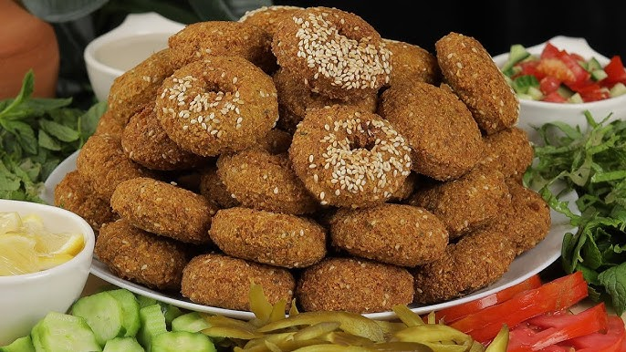
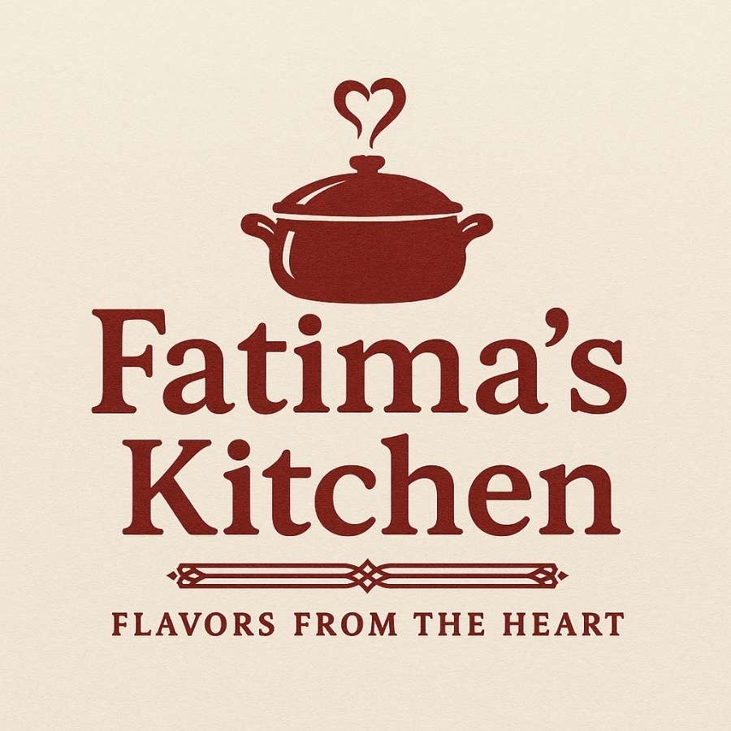
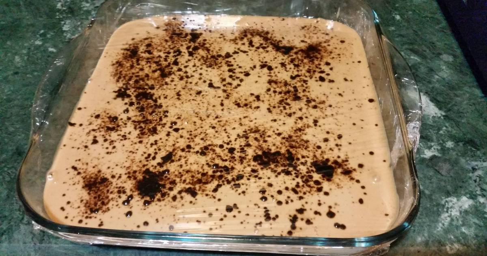

Appetizer




Fatima Derki, född 8 september 1973 i Damascus, Syrien. Är en artistisk, kreativ, kock och textillärare,
Hon växte upp i Damascus tillsammans med hennes mamma, 2 systrar och 2 bröder, där hon fick hjälpa till
sin mor med maten och hemmet vilket har skapat intresse hos henne för matlaggning.
Fatima är känd för hennes matlagning inom både hennes vän- och familj grupp. Hon har lärt sig
genom vägen och blivit en väldig bra kock som inte behöver recept utan gör de själv.
Och hennes förmåga att lära sig något nytt hela tiden, är helt imponerande. Att experimentera
är vägen!
